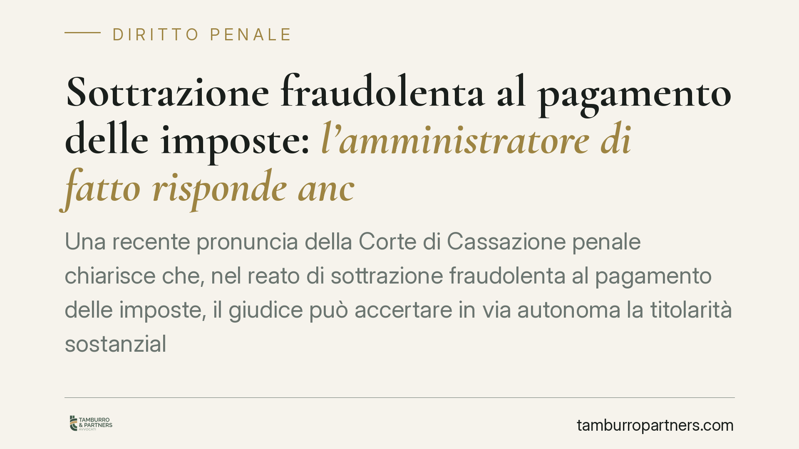

Sottrazione fraudolenta al pagamento delle imposte: l'amministratore di fatto risponde anche senza accertamento fiscale formale
Una recente pronuncia della Corte di Cassazione penale chiarisce che, nel reato di sottrazione fraudolenta al pagamento delle imposte, il giudice può accertare in via autonoma la titolarità sostanziale del debito tributario in capo all'amministratore di fatto, anche in assenza di un accertamento formale dell'Agenzia delle Entrate. Un principio che incide sulla tenuta dello schema con prestanome e sulla posizione dei terzi.

Il fatto e la questione giuridica
Lo schema è noto nella prassi: una società accumula debiti verso il Fisco, poi viene formalmente intestata a un prestanome — un soggetto privo di reale potere gestorio — mentre le decisioni restano in capo a chi la amministra di fatto. Nel frattempo i beni vengono dismessi o trasferiti, così da svuotare la garanzia patrimoniale prima che la riscossione si attivi.
La questione affrontata dalla Cassazione è se, per contestare all'amministratore di fatto il reato di sottrazione fraudolenta al pagamento delle imposte, occorra un accertamento fiscale formale dell'Agenzia delle Entrate indirizzato specificamente a quel soggetto. La risposta è negativa: il giudice penale può verificare autonomamente a chi faccia capo, nella sostanza, l'obbligazione tributaria.
Inquadramento normativo
L'art. 11 del D.lgs. 74/2000 punisce chi, per sottrarsi al pagamento di imposte, interessi o sanzioni, aliena simulatamente o compie altri atti fraudolenti sui propri o altrui beni, in modo da rendere in tutto o in parte inefficace la procedura di riscossione coattiva. La soglia prevista dal comma 1 è di cinquantamila euro di imposta, interessi e sanzioni complessivamente dovuti.
Su questa soglia va fatta una precisazione, spesso trascurata. Secondo l'orientamento prevalente in dottrina e giurisprudenza, il superamento dei cinquantamila euro costituisce un elemento costitutivo del reato, non una semplice condizione obiettiva di punibilità. La distinzione non è teorica: incide sull'oggetto del dolo e sulla stessa struttura dell'illecito, perché l'elemento costitutivo deve essere abbracciato dalla consapevolezza dell'agente.
Si tratta, inoltre, di un reato di pericolo: non è necessario che la riscossione sia stata effettivamente vanificata, ma che l'atto compiuto sia idoneo a renderla inefficace. La condotta si consuma a prescindere dall'esito concreto della procedura esecutiva.
La figura dell'amministratore di fatto trova il proprio fondamento nell'art. 2639 c.c., che equipara a chi riveste formalmente la carica il soggetto che esercita in concreto, in modo continuativo e significativo, i poteri tipici della funzione gestoria.
Sul punto dell'accertamento autonomo il ragionamento della Corte si ancora all'art. 20 del D.lgs. 74/2000, che sancisce il principio di autonomia del procedimento penale rispetto a quello tributario: il processo penale non è sospeso in attesa della definizione dell'accertamento fiscale. Ne discende che il giudice penale può ricostruire la titolarità sostanziale del debito sulla base delle prove acquisite, senza attendere né presupporre un atto impositivo formale nei confronti dell'amministratore di fatto.
Implicazioni pratiche
Il principio riduce lo spazio di manovra dello schema fondato sull'interposizione di prestanome. Chi gestisce di fatto l'impresa non può più contare sull'assenza di un accertamento formale a proprio nome per escludere la responsabilità penale.
Sul piano probatorio, assumono rilievo centrale gli elementi che documentano l'effettivo esercizio dei poteri gestori: movimentazione dei conti correnti, firme su contratti e operazioni rilevanti, rapporti con banche e fornitori, direttive impartite a dipendenti e collaboratori. È su questo materiale che si fonda l'attribuzione sostanziale sia della gestione sia del debito.
Particolare attenzione va riservata alle operazioni di dismissione del patrimonio compiute in prossimità delle scadenze fiscali: cessioni, costituzioni di garanzie, trasferimenti infragruppo. Quando tali atti appaiono idonei a svuotare la garanzia patrimoniale, possono integrare la condotta fraudolenta rilevante.
Delicata resta la posizione del terzo acquirente del bene poi sottoposto a sequestro. Chi ha acquistato in buona fede un immobile o un'azienda può trovarsi coinvolto in una vicenda cautelare e deve essere in grado di dimostrare l'estraneità alla finalità elusiva e l'effettività dell'operazione.
Va infine ribadita l'autonomia del procedimento penale rispetto all'accertamento fiscale: l'eventuale definizione, contestazione o annullamento dell'atto impositivo in sede tributaria segue binari distinti e non determina automaticamente l'esito del processo penale.
Cosa fare in concreto
- Verificare, prima di assumere o lasciare cariche societarie, l'esposizione tributaria della società e la coerenza tra ruolo formale e poteri effettivamente esercitati.
- Conservare e ordinare la documentazione bancaria e contrattuale che consente di ricostruire con precisione chi ha gestito l'impresa e con quali poteri.
- Valutare con assistenza tecnica la natura e la tempistica di ogni operazione di dismissione patrimoniale compiuta in presenza di debiti fiscali rilevanti.
- Per il terzo acquirente, predisporre e conservare la prova dell'effettività economica dell'operazione e del prezzo versato.
- Affrontare la gestione della crisi d'impresa con adeguata assistenza tecnica fin dalle prime fasi, e non quando la misura cautelare è già stata disposta.
---
*Contributo informativo a cura di Tamburro & Partners — Avv. Giuseppe Tamburro. Non costituisce parere legale.*
Ogni condominio ha una storia a sé.
Se gestisci un'amministrazione e vuoi un confronto su una specifica questione condominiale, scrivi allo studio. Ti rispondiamo entro un giorno lavorativo.